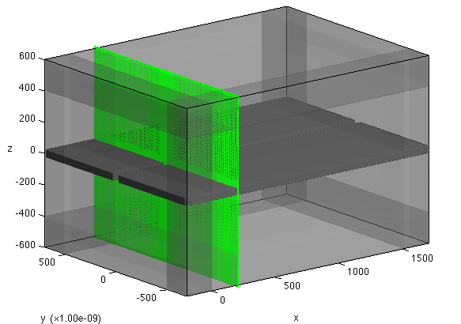

Using FD3D for Large Problems
MaxwellFDFD constructs a system of linear equations and solves it by MATLAB's direct solvers. However, for large (typically 3D) problems, direct solvers use too much memory, and therefore more memory-efficient, iterative solvers are more suitable.
FD3D is a companion program that runs on a large LINUX cluster to solve 3D problems using iterative solvers. maxwell_run can be configured to generate input files for FD3D. These input files are uploaded to the LINUX cluster and the solution files are calculated by FD3D. Then, the solution files are downloaded to your local computer and loaded to MaxwellFDFD for further analysis.
This document briefly explains how to generate the input files and load the solution files in MaxwellFDFD.
Contents
Example Code
We consider a simple 3D problem that is to simulate wave propagation through a slot waveguide formed in a thin metal film. The code to solve this problem is:
inspect_only = true; gray = [0.5 0.5 0.5]; % [r g b] maxwell_run(... 'OSC', 1e-9, 1550, ... 'DOM', {'Palik/SiO2', 'none'}, [-200 1700; -700 700; -600 600], 20, BC.p, 200, ... 'OBJ', ... {'Palik/SiO2', 'none'}, Box([-200 1700; -50 50; -50 50], [20 2 2]), ... {'CRC/Ag', gray}, ... Box([-200 1700; -700 -25; -25 25], 20), Box([-200 1700; 25 700; -25 25], 20), ... 'SRCJ', ModalSrc(Axis.x, 200), ... inspect_only);
Upon execution, the above code inspects the simulation domain and produces the figure that looks like:

Generating Input Files for FD3D
maxwell_run constructs the simulation domain using the given arguments. Once the simulation domain is constructed, the problem can be solved by different numerical solvers. maxwell_run's default choice is MATLAB's direct solvers, but it can be also configured to use FD3D, a companion program of MaxwellFDFD that solves Maxwell's equations by iterative solvers.
To use FD3D, we need to generate input files that can be read by FD3D. These input files contain the information about the simulation domain. To generate the input files, we should command maxwell_run to do so by setting solver optiotns:
inspect_only = false; % Solver Options solveropts.method = 'inputfile'; solveropts.filenamebase = 'slot_3d'; % Input Files gray = [0.5 0.5 0.5]; % [r g b] maxwell_run(... 'OSC', 1e-9, 1550, ... 'DOM', {'Palik/SiO2', 'none'}, [-200 1700; -700 700; -600 600], 20, BC.p, 200, ... 'OBJ', ... {'Palik/SiO2', 'none'}, Box([-200 1700; -50 50; -50 50], [20 2 2]), ... {'CRC/Ag', gray}, ... Box([-200 1700; -700 -25; -25 25], 20), Box([-200 1700; 25 700; -25 25], 20), ... 'SRCJ', ModalSrc(Axis.x, 200), ... solveropts, inspect_only);
(Note that inspect_only is now flipped to false.) Now, upon execution the above code generates four input files:
- slot_3d.h5 for the grid information,
- slot_3d.eps.gz for the electric permittivity,
- slot_3d.srcJ.gz for the electric current source,
- slot_3d.srcM.gz for the magnetic current source.
The base name of the files, |slot_3d|These files can be copied to the machine where FD3D runs. See README file to learn how to use FD3D to solve the problem described in the input files.
Reading Solution Files in MATLAB
A successful run of FD3D generates two solution files:
- slot_3d.E.h5 containing the E-field,
- slot_3d.H.h5 containing the H-field.
These two files can be read in MATLAB
[E, H] = read_output('slot_3d');
Note that the above read_output can read the solution file only if the current MATLAB directory (where the script that reads the solution files by read_output runs) contains slot_3d.h5 file as well as the two solution files; the solution files themselves do not have the grid information that slot_3d.h5 file has.
Complete Code
Below is a typical code to work with FD3D. You run the code with has_sol = false to create input files. Once you solve the problem using FD3D and download the solution files in the same directory where you created the input files using the code below, you flip has_sol to true and run the code again to read and visualize the solution.
If you want to use obj_array and src_array in visualization, you should save them separately as .mat files using save function. The code below does this for you when inspect_only = false.
inspect_only = false; has_sol = false; % true if solution files exist % Solver Options solveropts.method = 'inputfile'; filenamebase = 'slot_3d'; solveropts.filenamebase = filenamebase; if ~has_sol % solution files do not exist % Input Files gray = [0.5 0.5 0.5]; % [r g b] [~, ~, obj_array, src_array] = maxwell_run(... 'OSC', 1e-9, 1550, ... 'DOM', {'Palik/SiO2', 'none'}, [-200 1700; -700 700; -600 600], 20, BC.p, 200, ... 'OBJ', ... {'Palik/SiO2', 'none'}, Box([-200 1700; -50 50; -50 50], [20 2 2]), ... {'CRC/Ag', gray}, ... Box([-200 1700; -700 -25; -25 25], 20), Box([-200 1700; 25 700; -25 25], 20), ... 'SRCJ', ModalSrc(Axis.x, 200), ... solveropts, inspect_only); if ~inspect_only save(filenamebase, 'obj_array', 'src_array'); end else % solution files exist [E, H] = read_output(filenamebase); load(filenamebase); % read obj_array and src_array visall(E{Axis.y}, obj_array, src_array); end